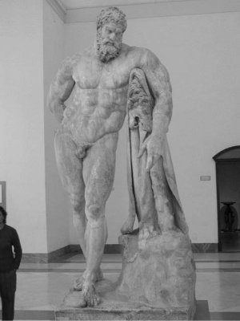

Baştanrı Zeus'un oğlu Herakles biraz daha gelişip olgunlaşınca ilkin tanrıça Atena, sonra da tanrı Apollon'la tanrı Hermes onu gerekli olacak en güzel ve en aranan yeteneklerle donattılar... Bu aşamadan sonra Herakles; tanrıların dünyaya saldığı başıboş canavarları ve kralların halklarına dayattıkları zorbalıkları yok etmek için artık her türlü savaşıma hazır olduğunu duyumsadı... Bu arada zor duruma düştüğünde yardım ettiği Tebai kralı da, ödül olarak kızı Megayra'yı (Megaira) eş olarak verdi ona. Bu evlilikten elliye yakın çocuğu oldu...
Ama her şeye karşın Herakles'e olan öfkesini hep sürdüren tanrıça Hera, bir gün aklını başından alıp onu çıldırttı. Zavallı Herakles de, bir çılgınlık nöbeti sırasında karısını ve çocuklarını öldürdü! Aklı başına gelince de üzüntüsünden artık ne yapacağını bilemiyordu. Gidip Delfoy'daki bilici Kalhas'a danıştı. Kalhas ona, bir yıllığına köle olarak acımasız kral Evristeus'un (Eurystheus) buyruğuna girmesi gerektiğini söyledi. Çünkü köle olarak bu zorba kralın bütün buyruklarını yerine getirdikten sonra, belki günahlarından arınabilecekti!..
Kral Evristeus; Herakles'in Baştanrı Zeus'un kaçamak aşklarından dünyaya gelen oğullarından biri olduğunu, haliyle karısı tanrıça Hera'nın ona olan dinmeyen öfkesinin de bundan kaynaklandığını bir yerlerden duymuştu... Ayrıca bu gücü sınırsız kahramanın bir gün kendisini kovup tahtına kurulmasından da son derece ürküyordu. İşte kral Evristeus; onun köle olarak buyruğuna verilmesinden duyduğu sevinçle, tanrıların bile üstesinden gelemeyeceği çok ağır görevler vermeye başladı ona! Bir ölümlü kadın olan kraliçe Alkmene'yle Baştanrı Zeus'un kaçamak aşklarından doğan Herakles de, kralın bütün keyfi buyruklarını eksiksiz yerine getiriyordu. Ne var ki her seferinde kral Evristeus, buyruğundaki Herakles'in inanılmaz başarılarını gördükçe daha çok ürkmeye başladı ondan. Gene bir gün, güneşin battığı yörelerde, Hesperid'ler denen üç perikızının bakıp yetiştirdiği "Altın Elma Bahçeleri"nden, bir torba dolusu altın elma toplayıp getirmesi buyruğunu verdi...

Herakles
Kahramanımız Herakles, bu bahçeleri bulabilmek için hep batıya doğru gitti. Bu arada yolu üstünde önüne çıkan, Avrupa'yı Afrika'ya bağlayan dar ve eğreti boğazı daha da genişletti ve bu boğazın birbirine bakan her iki yüzüne, birbirleri üstüne yıkılıp yeniden birleşmesinler diye, denizin içinden yükselen kalın ve heybetli direkler dikti. İşte Avrupalıların "Herakles Direkleri" adını verdikleri Cebelitarık Boğazı da böyle oluştu...
Bundan sonra da önüne çıkan bütün zorlukları aşa aşa dünyanın sonu olan "Atlas Dağları"nın eteklerine ulaştı. Orada, Atlas adındaki bir tanrı; Altın Elma Bahçeleri'ne uzak olmayan bu dağda, hiç kıpırdamadan öylece dünyamızı elleri ve omuzları üstünde tutuyordu. Çünkü Baştanrı Zeus'un haksızlıklarına bir zamanlar isyan eden tanrılardan biriydi... O yüzden Zeus, sonsuza dek dünyayı elleri üstünde taşıma yükümlülüğüyle cezalandırmıştı onu!.. İşte Herakles, adını daha önce duyduğu bu tanrı Atlas'a anlattı derdini... Bir torba dolusu Altın Elma toplamalıydı. Herakles'e acıyan tanrı Atlas, bir süreliğine dünyayı omuzlarına alabilirse, söz konusu Altın Elmaları kendisinin toplayıp getirebileceğini söyledi. Çünkü bu bahçelerin önünde, kimseleri yanına yaklaştırmayan azılı bir canavar sürekli nöbet tutuyordu... O yüzden kimseler giremiyordu o bahçelere! Bunun üzerine Herakles, bir süreliğine dünyayı omuzları üstüne aldı. Dünyayı elleri üzerine alırken de onu sarsıp sallamamaya çalıştı... Ne var ki dünyayı omuzları üstünde sarsmadan, sallamadan taşımak hiç de kolay değildi! Bu ağırlığı sonsuza dek taşıyacak olan tanrı Atlas'a da çok acıdı Herakles.
Gerçekten de fazla gecikmeden topladığı Altın Elmalarla geri döndü tanrı Atlas. Ne var ki onları götürüp kral Evristeus'a kendi elleriyle teslim edeceğini söyledi. Ama Herakles de aralarında böyle bir anlaşma yapmadıkları yanıtını verdi. Atlas, topladığı Altın Elmaları getirip kendisine verecekti; anlaşmaları öyleydi!.. Zaten; "ya onları krala teslim etmeye giderken Atlas'ın başına bir şey gelirse benim halim ne olur?" diye düşündü bir an ve iliklerine dek ürperdi!.. Çünkü artık sonsuza dek kendi omuzları üstünde taşımak zorunda kalacaktı dünyayı! Neyse ki aralarında anlaştılar ve tanrı Atlas, Herakles'in omuzlarındaki dünyayı gene kendi omuzları üstüne koydu yeniden; hiç sarsıp sallamadan. Çünkü en ufak bir sallantı, çok büyük depremler olarak yansıyordu dünyamıza!.. Ve Herakles, Altın Elmaları aldığı gibi doğruca kral Evristeus'a götürüp teslim etti... Ve kral uzun süre şaşkınlığını gideremedi...
Herakles bunun gibi toplam on iki olağanüstü zor görevi yerine getirmek zorundaydı. Bunları yerine getirirse belki günahlarından arınmış olacaktı... Gerçekten de Herakles, hiçbir insanın göze alamayacağı bu görevlerin hepsinin de üstesinden geldi...[4]
Bu görevleri tamamladıktan sonra tam özgürleştim derken, hiç beklemediği bir anda, kendisine yapılan bir haksızlık yüzünden elini yeniden kana bulayıverdi!.. Başvurduğu tanrı Apollon'un bilicisi; günahından arınması karşılığında, köle olarak bir yıl daha birinin yanında çalışması gerektiğini söyledi... Haliyle köle pazarına düşen bu güçlü ve yakışıklı köleyi, Lidya kraliçesi güzel Omfale (Omphale) satın alıp sarayına götürdü. Herakles; kraliçenin her isteğine, her çocuksu hevesine gıkını çıkarmadan boyun eğdi ve onun komşu ülkelerle olan sorunlarını da bu arada güçlü kollarıyla çözümledi. Ama doymaz tutkularla yüklü kraliçe Omfale; Herakles'in bir kadın gibi ev işleri görmesini, örgü örmesini de istedi. Umarsız köle Herakles, kraliçesinin isteği uyarınca, dizleri dibine oturup yün de eğirdi, çıkrık da çevirdi, örgü de ördü...
Bu süreç de bittikten sonra, az çok bir rahata kavuşmanın sevincini yaşamaya başladı. Ne var ki bu sevinç, çok buruk bir sevinçti. Çünkü "insanın insana kul-köle olmasının" ne demek olduğunu, et-kemik olarak kendisi yıllarca yaşayıp görmüştü dünyamızda. Birden bir gün karşısına çıkan Erdem Hanım'la yaptığı konuşmayı anımsadı... Ve içi yeni bir savaşım serüveninin sıcaklığıyla aniden ısınıp aydınlanıverdi! Artık bundan böyle devlerle, canavarlarla savaşmak yerine; kendi gözleriyle gördüğü haksızlıklarla, insanlara dayatılan kölelik olgusuyla savaşmak üzere, Asya Afrika kıtalarına doğru, yeniden yollara düştü...